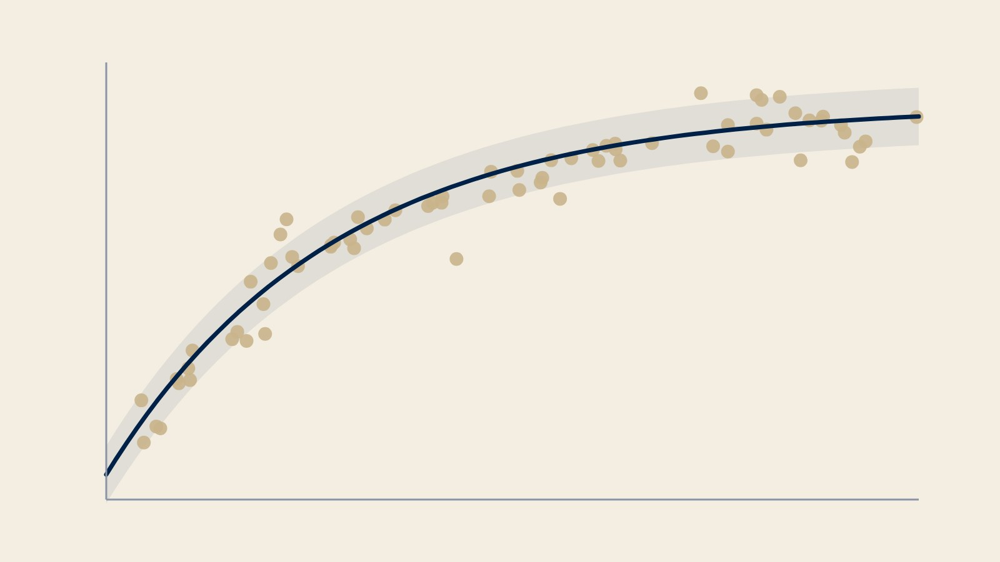
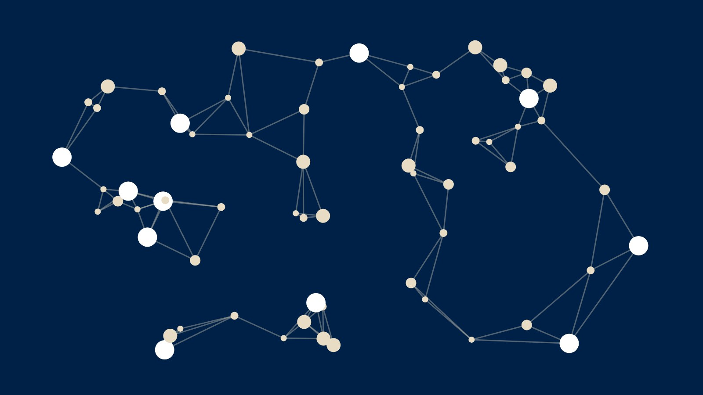
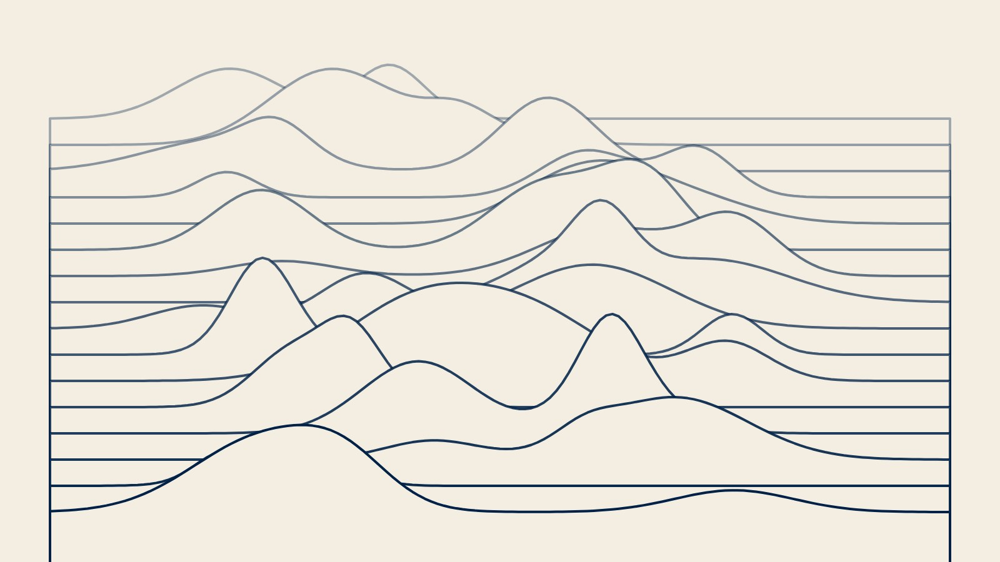

Research
One or two sentences that tie your topics together. Select a topic to read more about it.
Ongoing · since 2024

Describe the topic in three or four sentences. Say what question you ask, how you study it and what you have found so far. Keep it readable for someone outside your field, since the details go on the topic page.
PhD project · 2020–2024

Use this frame for an earlier or parallel line of work. One image and a short note are enough here. Visitors who want the methods and papers will open the topic page.
New direction · since 2026

A newer idea, a side project or a tool you built, such as software or a dataset. Mention who you work with and what you hope to find.